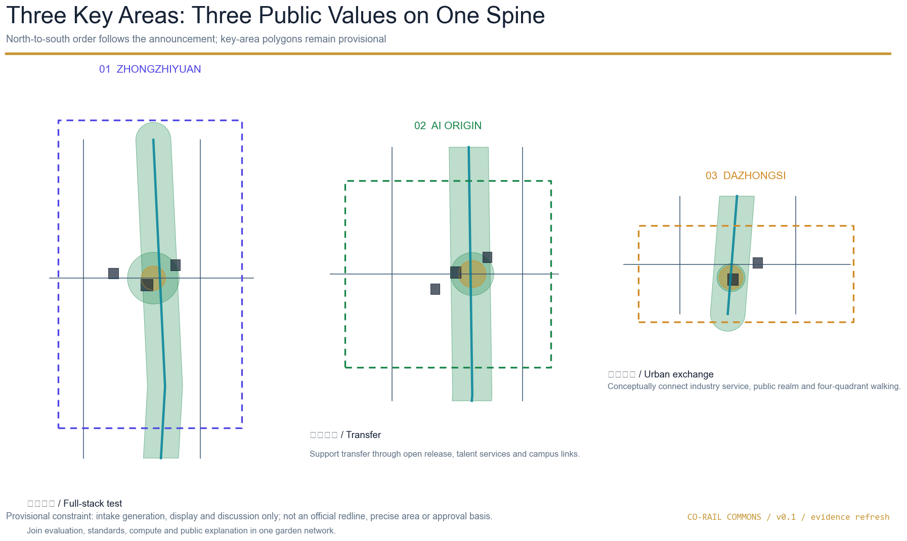
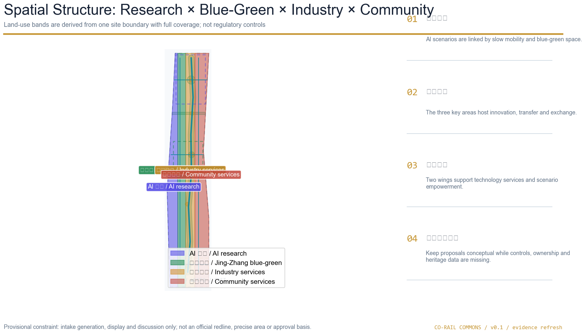
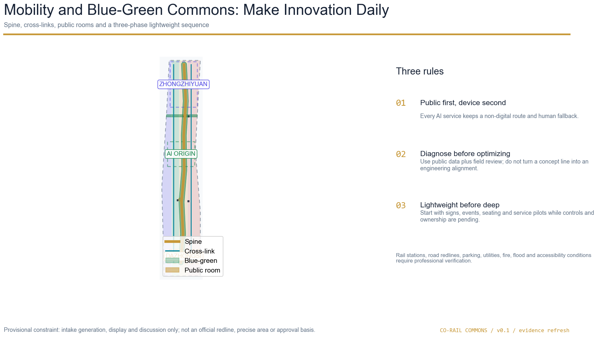
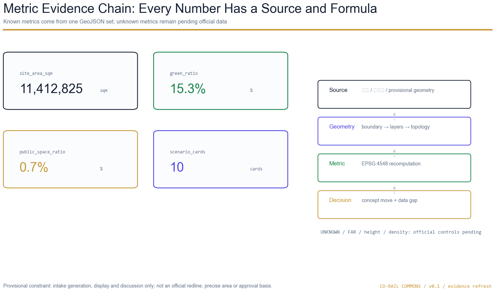

Ecosystem, talent, global case transfer, brand and future-city research.
Overview map
Main story: heritage and AI public innovation become a daily, walkable and reviewable urban network.

Three-level scope
Coordinated research 43.6 km² → overall design 11.4 km² → three key areas stated total 368.4 ha; current polygons are provisional substitutes.
Conceptual combination of land use, buildings, mobility, utilities, blue-green, character and renewal.
Three public rooms with distinct values: Zhongzhiyuan, AI Origin and Dazhongsi.
Key areas
Each key area includes positioning, spatial moves, building renewal, slow-mobility interface, AI scenarios and dependencies; the Dazhongsi station anchor remains pending under Issue #1029.
01
Zhongzhiyuan AI Acceleration Area
Full-stack innovation + standards
Concept proposal: function, space, access and operations require professional deepening.02
Beijing AI Origin Community
Campus-to-city transfer
Concept proposal: function, space, access and operations require professional deepening.03
Dazhongsi AI Industry Cluster
Native AI economy + exchange
Concept proposal: function, space, access and operations require professional deepening.
Land-use structure
Land-use codes follow the repository subset of the national classification; adjacent polygons come from one split process and can be recomputed from the same geometry.

Mobility and blue-green commons
The Co-Rail slow-mobility spine links green space, public rooms, transit and scenario nodes; concept roads are not road redlines.

Buildings and renewal projects
Twelve footprints are concept locations for retain/renovate/new-build studies; without a building survey, ownership and controls they are not demolition conclusions.
Treat existing space as a reprogrammable asset through open ground floors, shared services and lightweight interventions.
New footprints express service nodes and capability interfaces; FAR, height, intensity and approval conditions remain unknown.
Cultural landmarks and AI facilities remain subject to pending heritage, fire, accessibility, green and blue-line controls.
AI scenarios
Ten scenario cards; three test scenarios explicitly remain untested and need a pre-authorization baseline, success/stop conditions and human fallback.
Open-source Release Hall
Release, contribution and small demos; aggregate-only event data.
Urban Agent Sandbox
Test mobility, service and maintenance agents in booked spaces with human review.
Slow-mobility Diagnosis
Use public road data and field notes to find gaps; no approved alignment.
Talent Life Concierge
Connect living, learning, work and care with a human service fallback.
AI Safety Governance Walk
Show standards and trusted evaluation without private models or internal data.
Campus-to-Enterprise Living Room
Host technology transfer, IP, legal and partnership meetings.
Data Commons Theatre
Explain consent, auditability and data-asset circulation.
Low-carbon Compute Stop
A concept prototype for edge compute, public service and energy coordination.
Jing-Zhang Memory Route
A walkable narrative joining railway heritage, Zhongguancun and AI culture.
Global AI Week Route
A public-space route for developer week, open days, demos and city experience.
Open-source developerRelease, collaborate, test and build reputation.
Startup teamAffordable space, compute access and a test ground.
Enterprise visitorTransit access, demos, meetings and recruitment.
Local residentCommuting, leisure, services and low-disruption renewal.
Student or facultyTechnology transfer, cross-campus collaboration and daily walking.
Core metrics
Displayed core values match metrics.json; unknown metrics are not rendered as numbers.
site_area_sqm11,412,825 m²provisional geometry
green_ratio15.3%blue-green concept network
public_space_ratio0.7%public rooms
ai_scenario_card_count10reviewable cards

Task coverage
compliance_matrix.json covers announcement sections 1.3, 1.4, 1.5 and agent.1-agent.6; standard_matrix.json and design_depth_matrix.json maintain the professional evidence chain.
site boundary, key areas, land use, buildings, roads, green space, public space, constraints and phasing are present.
Three positions, five functions, three areas/two wings, six agent tasks, ten scenarios, five personas, three landmarks and long-term operations are expanded in the proposal.
Exact polygons, controls, height, ownership, road redlines, utilities, fire, heritage and field baselines are pending; all spatial moves remain concept proposals.
Self-check status
Status: after local self-check passes, the package may enter the formal review queue; provisional key-area warnings remain minor and are not organizer endorsement.
PASS / package_state=ready_for_review
PASS / provisional key areas disclosed
PASS / offline local-image-only delivery
Sources & Assumptions
Official announcement, cleared taskbook, maintainer provisional geometry, local standard snapshots and repository source registry.
OFFICIAL-ANNOUNCEMENTAGENT-TASKBOOKBOUNDARY-SOURCEMOHURDMNRExact polygons, controls, height, ownership, road redlines, utilities, fire, heritage and field baselines are pending; all spatial moves remain concept proposals.
A-BOUNDARY-001A-KEY003-001A-CONTROLS-001A-BASELINE-001All figures, derived geometry diagrams and HTML are generated by the declared AI agent; no uncleared images, marks, portraits or remote resources are used. This is a submitted concept, not an approved plan or built project.